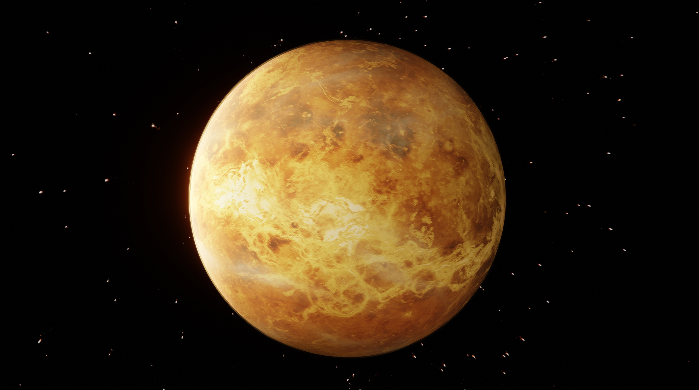

| Venus is the second planet from the Sun. It is often called Earth's "twin" or "sister" among the planets of the Solar System for its orbit being the closest to Earth's, both being terrestrial planets, and having the most similar and nearly equal size, mass, and surface gravity. Venus, though, is significantly different, especially as it has no liquid water, and its atmosphere is far thicker and denser than that of any other rocky body in the Solar System. The atmosphere is composed mostly of carbon dioxide and has a thick cloud layer of sulfuric acid that spans the whole planet. At the mean surface level, the atmosphere reaches a temperature of 737 K (464 °C; 867 °F) and a pressure 92 times greater than Earth's at sea level, turning the lowest layer of the atmosphere into a supercritical fluid. From Earth, Venus is visible as a star-like point of light, appearing brighter than any other natural point of light in the sky,[22][23] and as an inferior planet it is always relatively close to the Sun, either as the brightest "morning star" or "evening star". |